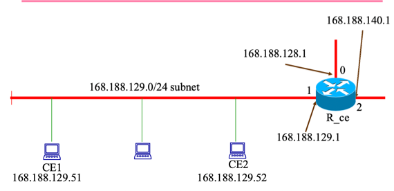
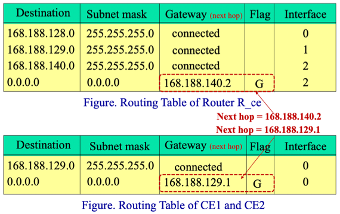
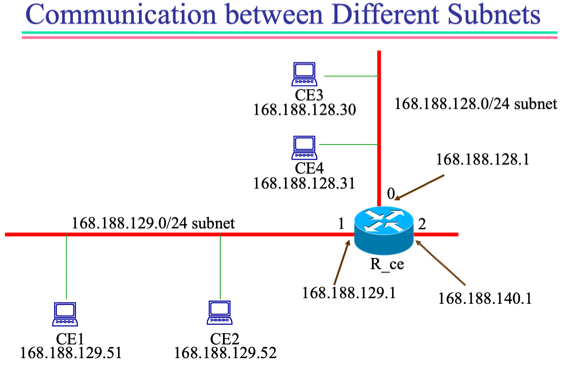
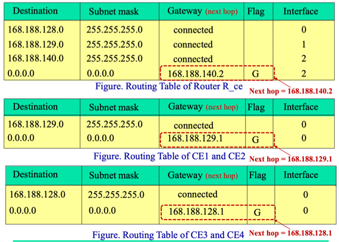
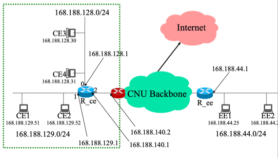
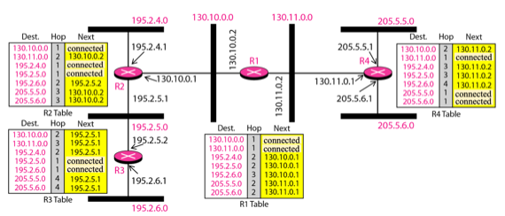

충남대학교 컴퓨터공학과 김상하 교수님의 "데이터 통신" 강의를 필기한 내용입니다.
다소 잘못된 내용과 구어적 표현 이 포함되어 있을 수 있습니다.
Physical Address, Logical Address
- 계층이 달라서 다른 주소를 사용하는거라고 심플하게 생각하자
ARP
- ARP(Address Resolution Protocol)
- 이게 뭐냐면 Logical Address로 Physical Address를 알아내는 방법이 바로 ARP인 것
- 상대방의 Logical Address를 알아도 Physical Address는 다른 계층이므로 알지 못하지만 Physical Address는 Logical Address보다 하위계층에서 사용되므로 Physical Address를 알지 못하면 패킷을 전송할 수 없다
상대방이 같은 서브넷에 존재할때

- 일단 여기서 CE1에서 CE2로 보내야 한다고 해보자

- 그리고 위의 첫번째 테이블이 라우터의 테이블이고, 두번째가 각 station들이 갖고있는 테이블이다
- 그럼 우선
- CE1의 routing table을 이용해 CE2가 같은 서브넷에 존재하는지를 확인한다
- subnet mask가 255.255.255.0이므로 168.188.129.52랑 AND하면 168.188.129.0이 나오므로 dst와 매치되어 같은 서브넷에 존재한다는 사실을 알 수 있다(gateway가 connect이므로 - router나 gateway나 next hop이나 다 같은말이라고 생각해도 된다)
- 같은 서브넷에 존재하므로 CE1은 ARP request을 보낸다
- ARP request는 먼저 수신지의 Physical Address를 Broadcast로 하고 Logical Address를 Routing table을 통해 알아낸 주소로 하여 송신하는 것을 의미한다.
- ARP request를 보내게 되면 같은 서브넷에 존재하는 모든 station이 받게 되는데 걔네들이 수신한 후에 network layer로 올려보내 Logical Address를 확인한다
- 만약 논리주소를 확인하여 자신과 다를 경우에는 그냥 버리게 되지만 논리주소가 같다면 답장하게 된다
- 답장할때는 송신지의 Physical Address를 자신으로 하고, 수신지의 Physical Address를 ARP Request를 보냈던 놈으로 한다
- 그럼 처음에 ARP를 보냈던 놈이 상대방의 물리주소를 알게 되므로 그 물리주소를 이용해 데이터 패킷을 보내게 된다
- 이때 저 router table은 어떻게 만드느냐
- Router의 router table은 router가 설치될때 관리자가 설정해줘야 되지만
- station의 router table은 자동으로 생성된다
- station의 router table을 생성하려면 세가지가 필요하다
- 자신의 논리주소, subnet mask, destination
- 자신의 논리주소와 subnet mask를 입력해주면 이 둘을 AND연산해 destination을 알아내고 이때의 gateway는 connect로, destination이 아닌 경우에는 default에 걸리게 해 router로 갈 수 있도록 gateway를 router의 논리주소로 설정한다
- 그리고 저기 테이블에 보면 G Flag가 있는데 이것은 해당 주소가 유효하다는 의미이다
다른 서브넷에 존재할 때

- CE1에서 CE3로 보내야 한다고 하고

- 이게 걔네들에 대한 routing table이라고 해보자
- 기본 로직은 동일하다. 상대방의 논리주소를 자신의 routing table에 넣어 같은 서브넷인지 아닌지부터 확인한다
- 168.188.128.30을 CE1의 routing table에 넣어 255.255.255.0과 AND했더니 168.188.128.0이므로 destination이랑 달라 서브넷에 존재하지 않고 default의 gateway로 가야한다는 것을 알게 된다
- 그럼 이제 gateway의 논리주소에 대해 ARP request를 하게 된다
- ARP에 대한 답장이 와 gateway의 물리 주소를 알아낸 후에는 거기로 데이터 패킷을 보내게 된다
- gateway에서는 자신의 routing table과 데이터 패킷의 논리주소를 이용해 원래 목적지가 속한 서브넷을 알아낸다
- 패킷에는 목적지 논리주소가 168.188.128.30으로 되어있으므로 255.255.255.0과 AND를 해보면 첫번째 행에서 매치돼 gateway가 connected인 것을 알고 0번 인터페이스로 내보내야된다는 것을 알게 된다
- 서브넷을 알아냈다면 해당 서브넷에서 다시 ARP를 날리게 된다
- 그럼 목적지의 station이 ARP에 대한 답장을 보내 목적지의 물리주소를 알게 되고, router에서 그곳으로 데이터 패킷을 전송하는 것으로 통신을 종료된다
외부망으로의 통신
- 위의 예시를 그대로 사용하여 외부망으로의 통신이 어떻게 이루어지는지 확인해보자
- CE1에서 외부망의 133.40.53.2로 데이터 패킷을 보내야 한다고 해보자
- 그럼 또 자신의 subnet에 속해있는지 알아내기 위해 자신의 routing table로 확인한다
- 255.255.255.0과 133.40.53.2를 AND하면 133.40.53.0이므로 매치되지 않아 gateway로 가야된다는 것을 알게 된다
- 자신이 속한 subnet에 속하지 않으므로 gateway로 보내기 위해 gateway의 논리주소에 대해 ARP를 날린다
- 따라서 CE1은 168.188.129.1의 물리주소를 알기 위해 얘에 대해 ARP를 날리게 되는 것
- 답장이 오면 그 물리주소로 데이터 패킷을 보낸다
- 데이터 패킷이 gateway에 도착하면 얘는 또 자신한테 연결되어있는 subnet들 중 어디에 속하는지 알아내기 위해 routing table을 돌린다
- 데이터 패킷의 논리주소가 133.40.53.2이므로 이것에 대해 routing table을 돌려보면 어느 서브넷에도 속하지 않는다는것을 알게 된다
- 따라서 gateway에서도 subnet을 찾지 못했기 때문에 default의 gateway로 가야된다는 것을 알게 된다
- 당연히 이것은 gateway에서 다른 gateway로 보내는 통신이다 - 뭐 default gateway라고 따로 뭔가가 존재하는게 아니더라
- default의 gateway에 대한 물리주소를 알기 위해 ARP를 날리게 되고, 답장이 오면 그 물리주소로 데이터 패킷을 보내어 외부망으로 방출시키게 된다
- 뭐 그 이후로는 계속 routing table확인하고 논리주소 알아내고 ARP보내 물리주소 알아내고 거기로 패킷을 전달하는 과정을 반복하며 목적지까지 도달하게 되는 것이다
Subnet mask를 제대로 설정해야 하는 이유

- 지금까지 사용하던 예시를 계속 사용하여 설명을 해보면
- CE1에서 subnet mask를 255.255.255.0이 아닌 255.255.0.0으로 설정했다고 해보자
- 그럼 같은 서브넷이나 외부망으로는 통신이 되는데 다른 서브넷으로는 패킷이 보내지지 않는 이상한 상황이 벌어진다
- 그 이유는 일단 subnet mask가 255.255.0.0으로 되어있고 CE3인 168.188.128.30으로 보내야 한다고 해보자
- Subnet Mask가 255.255.0.0으로 돼있으면 Destination이 168.188.0.0으로 바뀌게 된다
- 이때 CE3에 subnet mask를 씌우면 168.188.0.0이 되는데 이것은 Destination과 같므로 실제로는 같은 서브넷이 아니지만 같은서브넷이라고 판단하게 된다
- 따라서 gateway로 보내지 않고 CE1의 서브넷에서 ARP를 날리지만 당연히 CE1의 서브넷에 CE3가 없기 때문에 답장이 오지 않는다 - 통신이 실패하게 되는 것
- 하지만 외부망으로의 통신은 가능 하다 - 만약 133.40.53.2로 보내야 한다고 해보자
- 255.255.0.0으로 masking을 해보면 133.40.0.0인데 이것은 Destination과 다르기 때문에 gateway로 가게 되고 여기서부터는 정상적으로 subnet mask가 설정되어있기 때문에 정상적으로 상대방을 찾아가게 되는 것
- 만약 CE1의 subnet mask가 255.255.255.192로 설정되어있을때는 어떻게 동작하는지 알아보자
- 이 경우 제대로 통신은 되지만 이상한 방식으로 작동한다
- 만일 CE1과 같은 서브넷에 존재하는 168.188.129.65로 보낸다고 해보자
- Subnet Mask를 255.255.255.192로 비꾸게 되면 Destination은 168.188.129.0으로 설정된다
- 하지만 168.188.129.65와 255.255.255.192를 masking하면 168.188.129.64가 된다
- 이 둘의 결과가 같지 않으므로 CE1는 gateway로 ARP를 요청해 데이터 패킷을 보내게 되는데
- gateway에서는 이놈이 CE1가 속한 서브넷에 같이 존재한다는 것을 자신의 routing table을 통해 알아내므로 gateway에서 목적지로 보내게 된다
- 즉, CE1에서 상대방으로 바로 가야 정상인데 CE1에서 gateway를 거쳤다가 상대방으로 가게 되는 것
망 전체에 대한 예시

- 이 예시에서는 저 Routing table을 읽을 수 있을 정도만 되면 된다
- 일단 Dest. 는 지금까지의 Destination과 같고
- Next가 Gateway랑 같다고 생각하면 된다
- 그리고 Hop은 Next까지 가기 위해 얼마나 걸리냐는 말이다
- R2 Table에서 130.10.0.0은 자신 관할의 Subnet에 존재하기 때문에 Connect인 것이고
- 한번에 갈 수 있기 때문에 Hop-to-Hop을 한번만 하면 된다는 의미에서 Hop의 값은 1로 설정되어 있는 것
- 하지만 130.11.0.0의 경우에는 자신의 관할에 있지 않기 때문에 일단 R1까지 가야되고 따라서 Next에 130.10.0.2가 들어있는 것이다
- 그리고 R1까지 갔다가 해당 주소로 가기 때문에 Hop의 값이 2인 것이다